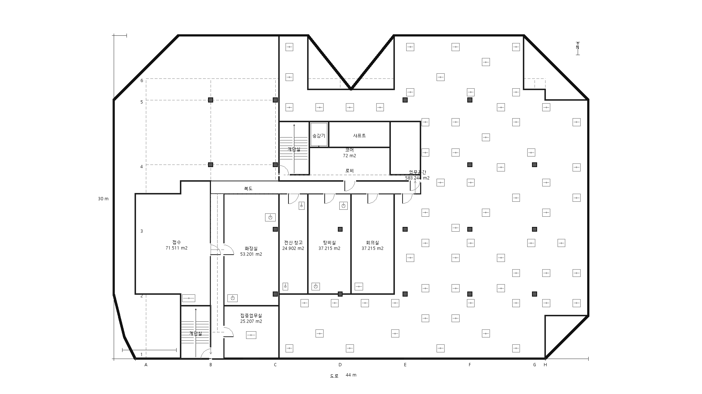

sample-irregular-12v-setback-office
alternative-01: notch_adjacent
accepted=true | quality accepted=true | score=2.6152
| Quality policy | building-quality/v1 |
|---|---|
| Hard pass | true |
| Total score | 0.7779 |
| Daylight proxy | 0.9227 |
| Room form | 1.0000 |
| Vertical stacking | 0.6667 |
| Egress | 0.5000 |
| Coverage/efficiency | 0.7596 |
| Core stack | 1.0000 |
| Shaft stack | 1.0000 |
| Wet-service stack | 0.0000 |
| Regulatory | Regulatory: not_checked |
| Unresolved regulatory facts | effective_date, floor_code_context, jurisdiction, measured_travel_distance, travel_limit_classification |
